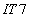
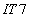
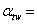
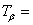
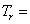

Толеранције зупчаника
Према
JUS M.C1.031...36
и одговарајућим ISO стандардима за
преносни однос
 2,
модул
: 5
2,
модул
: 5  и
квалитет
 одређујемо:
и
квалитет
 одређујемо:
Одступања мере прекозубаца из Т 7.175:
-0.084
-0.084
-0.132
-0.132
Бочни зазор, за збир померања профила различит од нуле 0">:
, одакле добијамо:
0.19522625
0.23677375
одређујемо толеранцију бочног зазора, заокружујући горње израчунате вредности на трећу децималу:
 0.195 . . . 0.237
0.195 . . . 0.237
Угао додирнице је одређен у завршном прорачуну:  0.3891661 rad
Угао нагиба бочне линије зубаца на основном кругу је израчунат у завршном прорачуну:
 0.081991 rad
0.081991 rad
4.697764 °
Одступања осног растојања из Т 7.176:
0.036
-0.036
Осно растојање зупчаника смо израчунали у завршном прорачуну:
 191.074
191.074
Дозвољена укупна радијална одступања из Т 7.178:
0.1
Пречник подеоне кружнице погонског зупчаника смо израчунали у завршном прорачуну:
 125.477
125.477
Дозвољена појединачна радијална одступања из Т 7.179:
0.028
Дозвољена одступања бочних линија зубаца из Т 7.172:
 0.017
Ширину
погонског
зупчаника смо усвојили у завршном прорачуну:  80
80
Дозвољено одступање центричности из Т 7.173:
 0.065
Дозвољено одступање еволвентних профила из Т 7.171:
0.014
Дозвољена одступања подеоног корака из Т 7.169:
±0.018

Дозвољена одступања основног корака из Т 7.169:
±0.018 ,
заокружено
на трећу децималу.
Угао
нагиба бочне
линије зубаца на подеоном кругу је задан по поставци задатка:  5 °
5 °
Одступања мере прекозубаца из Т 7.175:
-0.084
-0.084
-0.132
-0.132
Бочни зазор, за збир померања профила различит од нуле 0">:
, одакле добијамо:
0.19522625
0.23677375
одређујемо толеранцију бочног зазора, заокружујући горње израчунате вредности на трећу децималу:
0.195 . . . 0.237
Угао додирнице је одређен у завршном прорачуну: 0.3891661 rad
Угао нагиба бочне линије зубаца на основном кругу је израчунат у завршном прорачуну:
0.081991 rad
4.697764 °
Одступања осног растојања из Т 7.176:
0.036
-0.036
Осно растојање зупчаника смо израчунали у завршном прорачуну:
191.074
Дозвољена укупна радијална одступања из Т 7.178:
0.1
Пречник подеоне кружнице гоњеног зупчаника смо израчунали у завршном прорачуну:
 250.955
250.955
Дозвољена појединачна радијална одступања из Т 7.179:
0.028
Дозвољена одступања бочних линија зубаца из Т 7.172:
0.017
Ширину
гоњеног
зупчаника смо усвојили у завршном прорачуну: 76
Дозвољено одступање центричности из Т 7.173:
0.068
Дозвољено одступање еволвентних профила из Т 7.171:
0.015
Дозвољена одступања подеоног корака из Т 7.169:
±0.019
Дозвољена одступања основног корака из Т 7.169:
±0.019 ,
заокружено
на трећу децималу.
Угао
нагиба бочне
линије зубаца на подеоном кругу је задан по поставци задатка: 5 °